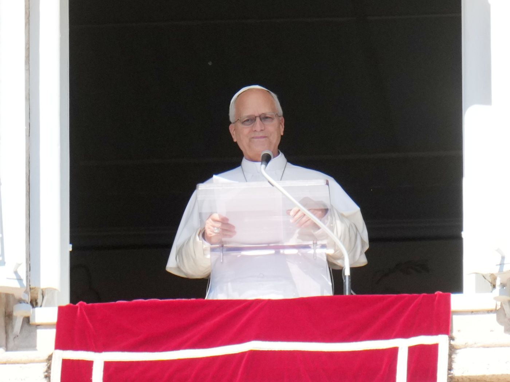

Pope Leo XIV to undergo surgery in Rome for lung nodule
The 71-year-old leader of the Catholic Church will enter hospital on Tuesday after doctors found a small lesion during a checkup.

Pope Leo XIV will undergo surgery at Rome’s Gemelli Hospital on Tuesday to remove a small nodule discovered on his left lung.
Why it matters
For Catholic faithful and Christians across Ghana and the diaspora, the health of the 71-year-old pontiff is a subject of earnest prayer. His open communication regarding the procedure offers reassurance to congregations worldwide as public papal audiences are paused.
The details
The 71-year-old head of the Roman Catholic Church announced the upcoming procedure to pilgrims gathered at Saint Peter’s Square during his weekly Sunday blessing, Al Jazeera reported. He told the crowd that medical staff detected the growth at a very early stage during a routine health check.
Delivering his address in Italian, the pontiff stated that the nodule was well-contained and that he decided to follow medical advice to take action. Following his remarks, the Vatican announced that the operation requires about one week of hospital recovery, leading to the cancellation of papal audiences through 20 October.
Church spokespeople did not clarify whether doctors suspect the growth to be malignant. However, medical information cited by Al Jazeera from the American Thoracic Society indicates that fewer than five per cent of lung nodules turn out to be cancerous.
Stephen Liu, a lung cancer specialist at MedStar Georgetown University Hospital in the United States, told Al Jazeera that such nodules are fairly common and are often benign. The pontiff has no known prior health problems and remains physically active through regular swimming and tennis.
Supportive messages followed the announcement, with Italian Prime Minister Giorgia Meloni issuing a statement of personal support for the Holy Father. According to Al Jazeera, she observed that the serenity and composure demonstrated by the pope while speaking about his health were reassuring.
The planned operation comes shortly before a scheduled papal tour across Latin America from 6 to 17 November, covering Uruguay, Argentina, and Peru. Although it remains unclear if recovery will require schedule changes, Pope Leo indicated to reporters that he intends to make the journey.
What’s next
Pope Leo will spend about a week recovering in hospital, with papal audiences cancelled until 20 October. He intends to proceed with his planned tour of Uruguay, Argentina, and Peru from 6 to 17 November.
Reported from
- Al JazeeraPope Leo to undergo surgery to remove lung nodule
- Al JazeeraPope Leo to undergo surgery to remove lung nodule in Rome
- Al JazeeraPope Leo XIV to undergo surgery after lump found in lung
- Al JazeeraPope Leo continues working after lung surgery announcement
- AP NewsPope will be admitted to hospital Tuesday for lung nodule surgery, Vatican says
- AP NewsWhat to know about Pope Leo’s planned lung nodule surgery
- ReutersPope Leo to be hospitalised on Tuesday ahead of lung surgery